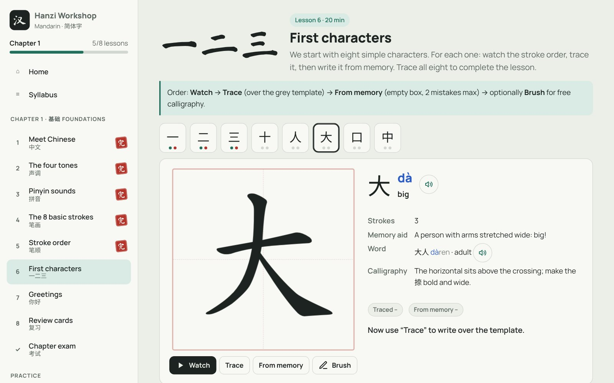
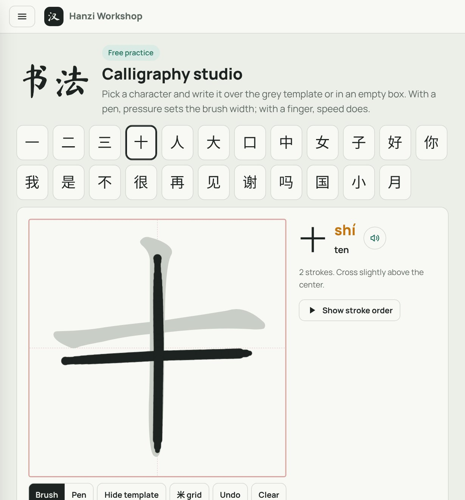
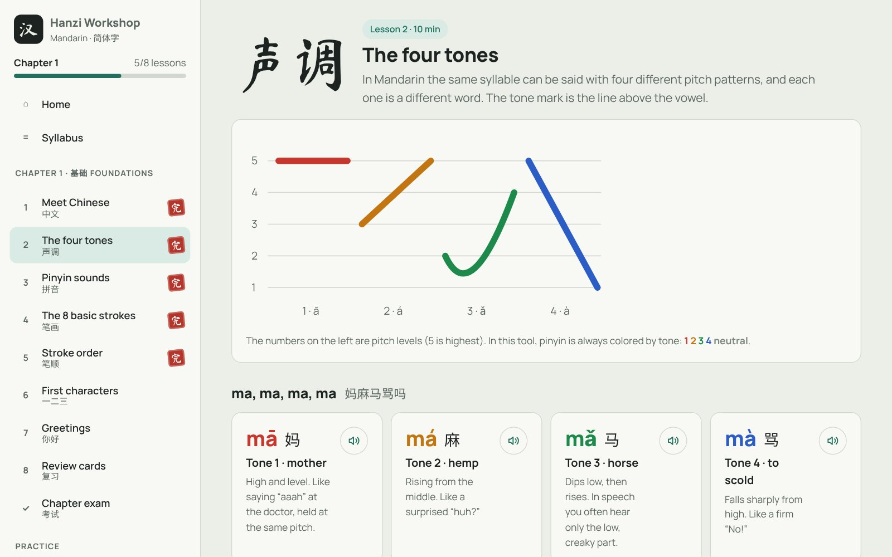

Hanzi Workshop
A Mandarin course made for a tablet and pen: tones, pinyin, stroke order and handwriting, one chapter at a time.
- Role
- Idea, learning goals and testing, built with Claude
- Runs
- In the browser; made for a tablet with a pen
- Output
- An interactive course with handwriting practice
- Status
- Chapter 1 of 10 live, the rest added one by one

01 · Problem
What need does it solve?
I wanted to learn Mandarin, including writing the characters by hand, not only recognising them on a screen.
Most language apps teach characters by tapping answers, which skips stroke order and handwriting. A fixed course also moves at its own pace, while I wanted each step to wait until I had really learned the one before.
02 · Solution
How it works
A course in a single web page, laid out for a tablet held in landscape with a pen:
- Eight short lessons for Chapter 1: how Chinese works, the four tones, pinyin sounds, the eight basic strokes, stroke order, first characters, greetings and review cards
- Every character in four steps: watch the stroke order, trace over a grey template, write it from memory, then practise freely with a brush
- Handwriting is checked stroke by stroke, so a wrong direction or order is caught on the spot
- A calligraphy studio where pen pressure sets the brush width
- Pinyin coloured by tone and every word spoken by the device's Chinese voice
- A chapter exam of 100 points; 80 or more unlocks the next chapter






03 · Architecture
How the system fits together
Everything runs in one page with no server. Lesson content and the stroke paths for each character are built into the page, the pen is read through the browser's pointer events, and speech comes from the device's own Chinese voice. Progress stays on the device. When a chapter exam is passed, the next chapter is prepared with Claude and added to the same page.
04 · Technology
What it is built with
| Writing checks | Hanzi Writer with open stroke data, built into the page |
|---|---|
| Brush | Canvas drawing; pen pressure sets the width, touches are ignored while a pen is in use |
| Audio | Web Speech API with the device's Chinese voice |
| Storage | Browser storage on the device |
| Hosting | GitHub Pages, no build step |
05 · Challenges
Hard parts and how they were solved
Writing that feels natural
So that a resting palm leaves no marks, finger touches are ignored once a pen is detected, and pen pressure drives the brush width.
Strict but fair checks
Each stroke is compared with the reference path; the tolerance lets small wobbles pass but not a wrong direction or order.
A course that keeps pace
Questions change on every exam attempt and answers are not shown, so a pass means the chapter was learned rather than memorised.
06 · Results
What came out of it
- Chapter 1 is complete: eight lessons, 13 characters to write by hand and a 100-point exam.
- A plan of ten chapters, from HSK 1 to an introduction to HSK 2.
- Handwriting practice in every lesson, with a free calligraphy studio for more than twenty characters.